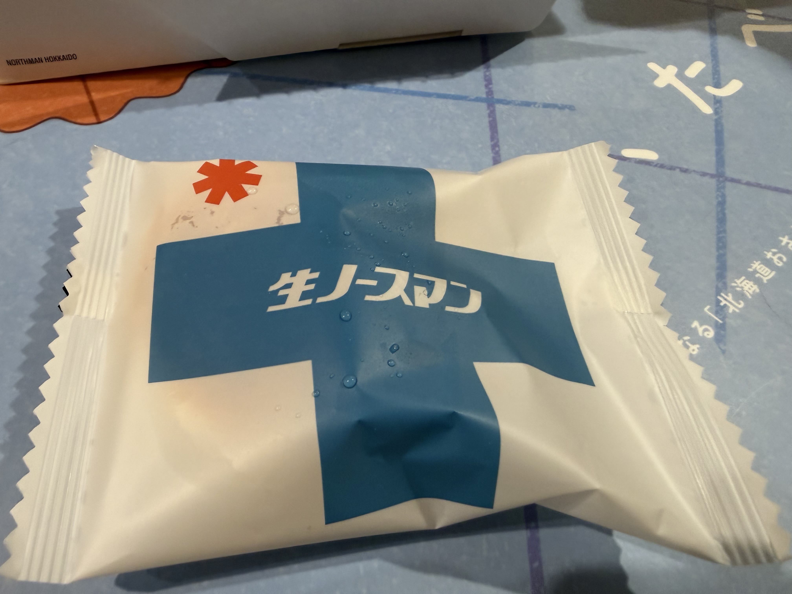
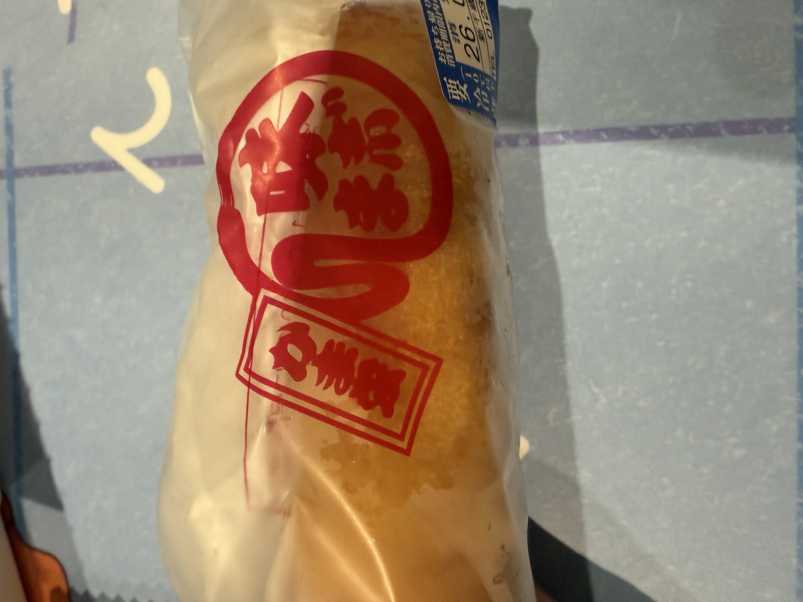

ここに紹介するモノ以外にもいっぱいあるんだけど、僕のお気に入りだけを厳選して紹介。
北海道の老舗菓子メーカー「札幌千秋庵」が販売する、和洋折衷スイーツ。 1974年発売の定番銘菓「ノースマン」に、北海道産生乳を使った生クリームをたっぷりと加えて冷たくして食べるのが生ノースマン。 たまに北海道展みたいなのをデパートでやるときに売ってることもあるけど、まあ北海道で食べたいよね。

小樽に本社を構えるかまぼこのお店。難しい言葉を使うと、水産加工物製造業者。 正直小樽の工場直売店で食べた方がいいけど、空港で手軽に済ませるのも1つの手。「かまぼこ」って聞いて微妙だなって思う人もいると思うけど、かま栄の“パンロール”ってやつ喰ってみ？飛ぶぞ。
